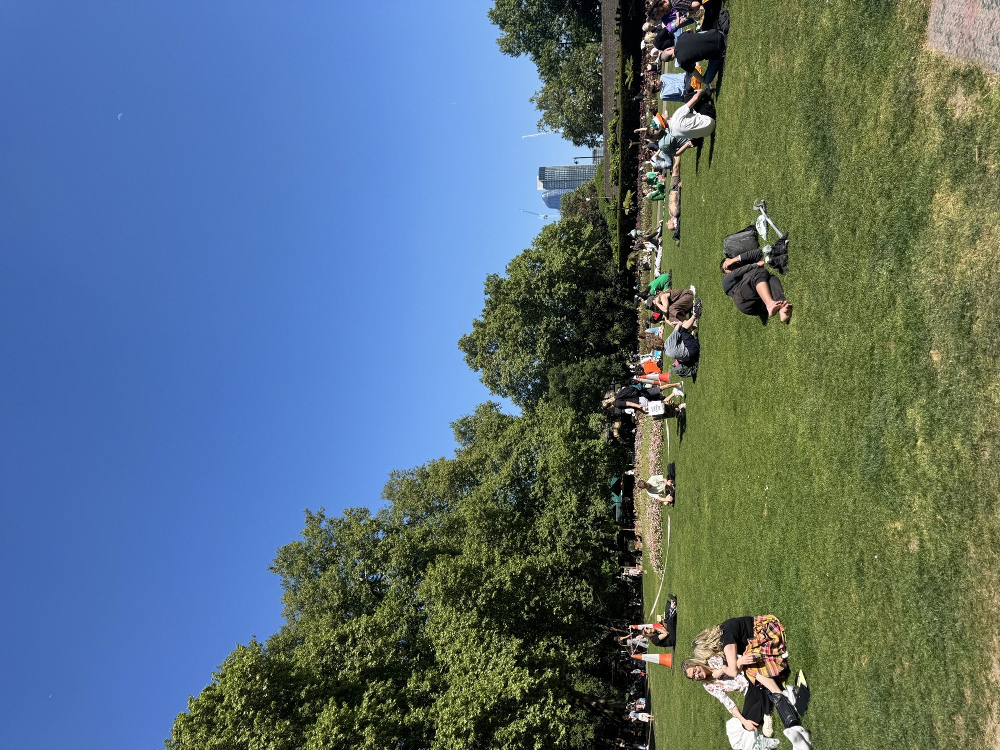
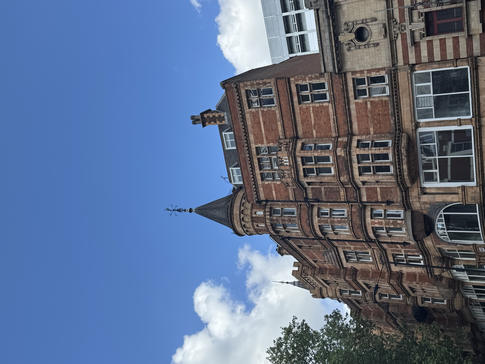
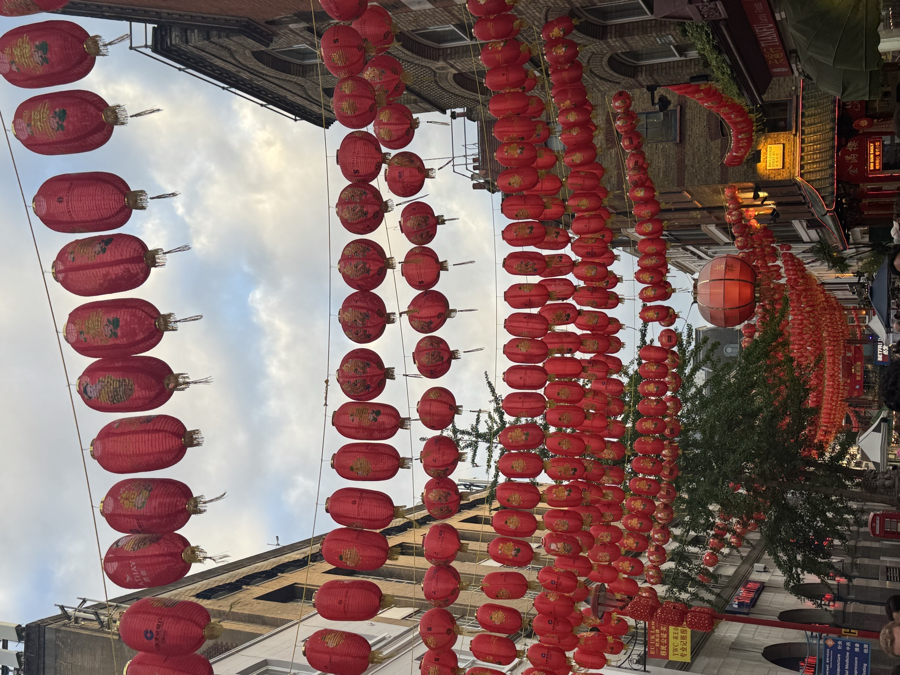
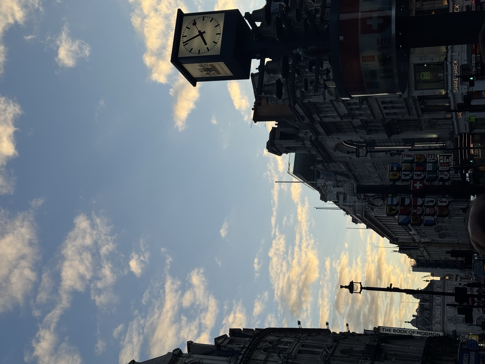

Italie
Période du voyage : [mois et année]
Un musée à ciel ouvert, où chaque ville raconte des siècles d’art et d’histoire. Les paysages, de la Toscane aux côtes de la Méditerranée, sont autant célèbres que la vie sociale autour de la table. Réputé pour : Rome et le Colisée, Venise, Florence et l’art de la Renaissance, la pizza et les pâtes, le café, la côte amalfitaine.
Photos


Portugal
Période du voyage : [mois et année]
Un petit pays facile à parcourir, entre collines colorées, océan Atlantique et villages blancs. Lisbonne et Porto offrent une ambiance nostalgique, faite de ruelles pavées, de tramways et de musique. Réputé pour : ses azulejos, le fado, le vin de Porto, les pastéis de nata, les falaises de l’Algarve, le palais de Sintra.
Photos


Angleterre
Période du voyage : [mois et année]
Un pays façonné par une histoire royale riche, des châteaux aux universités centenaires. Londres, cosmopolite et monumentale, contraste avec la campagne verdoyante et ses petits villages de pierre. Réputé pour : Big Ben et Tower Bridge, la famille royale, les pubs, le thé, Stonehenge, Oxford et Cambridge, le football.
Photos







France
Période du voyage : [mois et année]
Une grande diversité de paysages et de régions, des côtes bretonnes aux sommets alpins, de la Provence à l’Alsace. Elle reste une référence mondiale pour l’art de vivre, la culture et la gastronomie. Réputé pour : Paris et la tour Eiffel, le Louvre, la gastronomie et les vins, le Mont-Saint-Michel, les châteaux de la Loire, la Côte d’Azur.
Photos